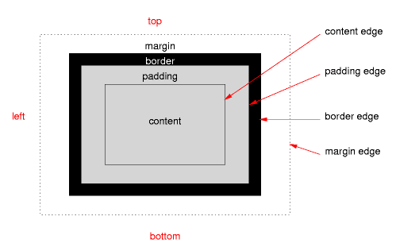
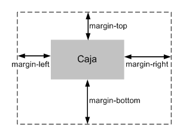
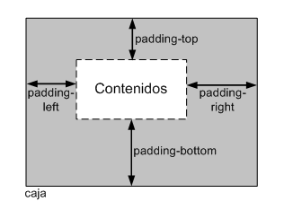

BOX MODEL
Partes de una Box Model
• Contenido (content): se trata del contenido HTML del elemento (las palabras de un párrafo, una imagen, el
texto de una lista de elementos, etc.)
• Relleno (padding): espacio libre opcional existente entre el contenido y el borde.
• Borde (border): línea que encierra completamente el contenido y su relleno.
• Imagen de fondo (background image): imagen que se muestra por detrás del contenido y el espacio de
relleno.
• Color de fondo (background color): color que se muestra por detrás del contenido y el espacio de
relleno.
• Margen (margin): separación opcional existente entre la caja y el resto de cajas adyacentes.

Propiedades Box Model
Propiedad: width
Se aplica a todos los elementos, salvo los elementos en línea que no sean imágenes, las filas de tabla y los
grupos de filas de tabla.
no admite valores negativos y los valores en porcentaje se calculan a partir de la anchura de su elemento
padre.
Propiedad: height
Establece la altura de un elemento. Si se indica un porcentaje, se toma como referencia la altura del
elemento padre. Si el elemento padre no tiene una altura definida explícitamente, se asigna el valor auto a
la altura.
Propiedad: margin-top, margin-right, margin-bottom, margin-left
Establece cada uno de los márgenes horizontales y verticales de un elemento.

Propiedades: padding-top, padding-right, padding-bottom, padding-left.
Establece cada uno de los rellenos horizontales y verticales de un elemento
Cada una de estas propiedades establece la separación entre el contenido y los bordes laterales de la caja
del elemento:

Propiedades: border-top-width, border-right-width, border-bottom-width, border-left-width.
Establece la anchura de cada uno de los cuatro bordes de los elementos.
La anchura de los bordes se indica mediante una medida (en cualquier unidad de medida absoluta o relativa) o
mediante las palabras clave thin (borde delgado), medium (borde normal) y thick (borde ancho).
Propiedad: border-width.
Establece la anchura de todos los bordes del elemento
Propiedades: border-top-color, border-right-color, border-bottom-color, border-left-color.
Establece el color de cada uno de los cuatro bordes de los elementos.
Propiedad: border-color.
Establece el color de todos los bordes del elemento.
Propiedades: border-top-style, border-right-style, border-bottom-style, border-left-style.
Establece el estilo de cada uno de los cuatro bordes de los elementos
Propiedad: border-style.
Establece el estilo de todos los bordes del elemento.
Propiedades: border-top, border-right, border-bottom, border-left.
Establece el estilo de todos los bordes del elemento.
Propiedades: shorthand.
Las propiedades "shorthand" permiten establecer alguno o todos los atributos de cada borde.
Propiedad: border.
Establece el estilo completo de todos los bordes de los elementos.
Propiedad: background.
Establece todas las propiedades del fondo de un elemento. El orden en el que se indican las propiedades es
indiferente, aunque en general se sigue el formato indicado de color, url de imagen, repetición y posición.